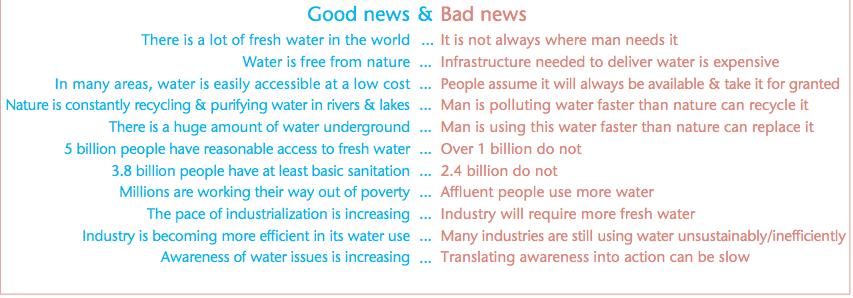

Water, water everywhere but not a drop to drink
Our water demands are growing. We are reaching a point where many major cities will be suffering water stress within years. London, the world’s 15th most water-stressed city, will have a deficit of over 59 million litres next year and a projected 359 million litres by 2035.
But where do these water shortages come from? After all, there’s a whole lot of water on the planet - about 1.39 billion cubic kilometers. But around 97 per cent is that saline solution we love to sail on, and another 2.5 per cent is fresh but frozen. That leaves us with only 0.5 per cent to available not only for us humans, but for the rest of our ecosystem as well.
This report from UN Water does a great job of explaining some of the issues with water availability, which range from low rainfall to overuse of aquifers, and that fact that 60 per cent of that usable fresh water is located in just 9 countries on Earth. That’s Brazil, Russia, China, Canada, Indonesia, U.S., India, Columbia and the Democratic Republic of Congo. Incidentally, DRC’s contribution here is down to Lake Tanganyika, the location of iilab’s Electronic Medical Records second deployment with Lake Tanganyika Floating Health Clinic.
In fact, if you look at the UN Water report, the rain-ridden UK in general is looking fairly healthy in terms of water availability - especially with predictions of increasing rainfall in autumn, winter and spring due to climate change, offset, though, by decreased precipitation in the summer. London’s water shortages arise because the city’s demands, especially given increases in population, will far outstrip the capacity of the Thames catchment river and groundwater flows to supply them, such that Thames Water is planning to redevelop their Deephams facility in Enfield to turn sewerage into drinking water to meet increasing needs.
This rather points to one of the big problems for humans and water consumption: water availability is less about volume and more about flow. There’s still quite a vast amount of water, but unfortunatly a lot of it isn’t where we need it to be for us to use.
 UN Water report
Another great example is the problems in Germany around insufficient flow in the water pipes. It is recommended that for water to be safe to consume, the complete volume of water in a pipe system has to flow through - or exchange - within 7 days (linked document is a pdf in German).
Water exchange is a real problem in Germany, where stagnation in pipes has been seen to be a real problem requiring chemical-based remediation. There is in fact some argument over whether cutting down on water usage is the best plan for Germany as remediation of stagnant water can lead either to pollution or deliberate waste of water. Although the problem arises from outdated infrastructure, this would be tricky to fix even if reduced water usage in the country were an absolute must.
In practical terms, then, it’s important to look at reducing water usage in the context of an area’s infrastructure and water availability. As part of my work on Open Droplet, I’m going to be researching whereabouts Open Droplet would be most useful, and what kind of other data - in terms of infrastructure, direct sensor data, community data and so on - we need to have at our fingertips to put our domestic water use in context.
In the meantime.
Alex in our engineering team has been beavering away on the system, working on getting a visual response system working. Using a strip of LEDs (ws2812b from World Semiconductors) along with an open source library (NeoPixel from Adafruit), he’s got them disco dancing at the press of a button. The next step is coupling them to the microphone system he and Sam already got running, so that they visualise the surrounding sound.